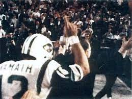
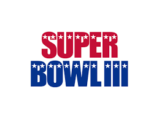

History
The Jets were created on August 14, 1959 where their stadium is in East Rutherford, New Jersey.
They were originally names the Titans but were later sold and changed to the Jets.
The have won 1 Super Bowl and 4 division championships
Awards
The 1 Super Bowl that the Jets have won was Super Bowl 3 in the 1968/69 season agains the Baltimore Colts.
In that Super Bowl they Colts were heavily favored but Joe Namath, the Jets QB at the time, guaranteed the win and came through.
The divison years they won were 1968, 1969, 1998, 2002

Current
Currently the qb for the Jets is Aaron Rogers who had a season-ending injury during the 4th snap of the first game of the season.
As a result the starter qb for the Jets was in flux between Zach Wilson, Trevor Semien, and Tim Boyle, switching due to either poor performance or injury.
They also had many other injuries, most prominent on the offensive live where they performed incredibly poor as a result.